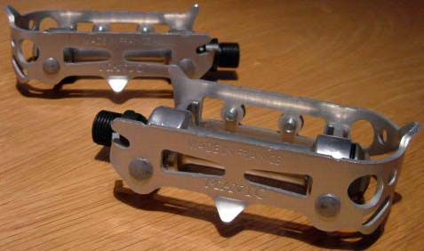
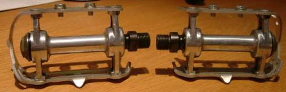
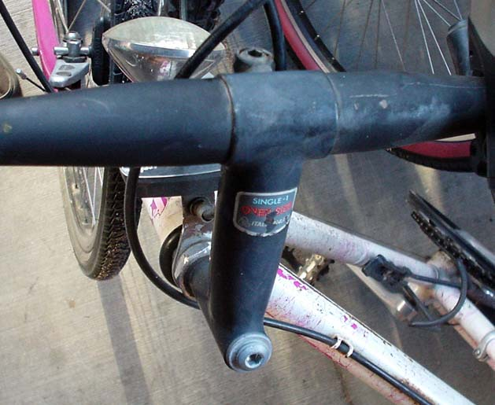

For a 1970s Sablière build, I'm looking for
pedals
(square-shouldered pedal bodies).
These are the 1st generation Mavic parts
from '79 to the early '80s.
This stuff is (subtly) different from the mid-late 80s SSC group like on
my Peugeot. You can see an
image of the full group here and the '79 catalog here.

1960s 'Licor 43' team jersey, info

earliest MAFAC Dural Forge brake calipers w/ oil port, open-back levers
(for '56 Peugeot
PLX10)

steel bars w/ center that tapers from 31.8mm to 22.2,
+ any other cro-mo tubing w/ big tapers like this
-> contact me at mookie43(at)mac(dot)com - thanks ~!